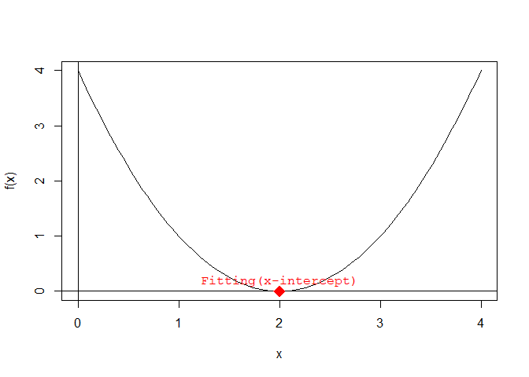

The goal of genetic.algo.optimizeR is to optimize the function f(x) = x2 − 4x + 4 using a genetic algorithm. The function represents a simple quadratic equation, and the goal is to find the value of x that minimizes the function.
Here’s a breakdown of the aim and the results:
Aim:
- Optimize the function f(x) = x2 − 4x + 4 to find the value of x that minimizes the function.
Results:
-
Initial Population:
- We start with a population of three individuals: x1 = 1, x2 = 3, and x3 = 0.
- We start with a population of three individuals: x1 = 1, x2 = 3, and x3 = 0.
-
Evaluation:
- We evaluate the fitness of each individual by calculating f(x) for each x value:
- f(1) = 12 − 4 * 1 + 4 = 1
- f(3) = 32 − 4 * 3 + 4 = 1
- f(0) = 02 − 4 * 0 + 4 = 4
- We evaluate the fitness of each individual by calculating f(x) for each x value:
-
Selection:
- We select individuals x1 and x2 as parents for crossover because they have higher fitness.
-
Crossover and Mutation:
- We perform crossover and mutation on the selected parents to generate offspring: x1′ = 1, x2′ = 3.
-
Replacement:
- We replace individual x3 with offspring x1′, maintaining the population size.
After multiple generations of repeating these steps, the genetic algorithm aims to converge towards an optimal or near-optimal solution. In this example, since it’s simple and the solution space is small, we could expect the algorithm to converge relatively quickly towards the optimal solution x = 2, where f(x) = 0.
Usage
library(genetic.algo.optimizeR)
# Initialize population
population <- initialize_population(population_size = 3, min = 0, max = 3)
print("Initial Population:")
#> [1] "Initial Population:"
print(population)
#> [1] 1 0 2
generation <- 0 # Initialize generation/reputation counter
while (TRUE) {
generation <- generation + 1 # Increment generation/reputation count
# Evaluate fitness
fitness <- evaluate_fitness(population)
print("Evaluation:")
print(fitness)
# Check if the fitness of every individual is close to zero
if (all(abs(fitness) <= 0.01)) {
print("Termination Condition Reached: All individuals have fitness close to zero.")
break
}
# Selection
selected_parents <- selection(population, fitness, num_parents = 2)
print("Selection:")
print(selected_parents)
# Crossover and Mutation
offspring <- crossover(selected_parents, offspring_size = 2)
mutated_offspring <- mutation(offspring, mutation_rate = 0) #(no mutation in this example)
print("Crossover and Mutation:")
print(mutated_offspring)
# Replacement
population <- replacement(population, mutated_offspring, num_to_replace = 1)
print("Replacement:")
print(population)
}
#> [1] "Evaluation:"
#> [1] 1 4 0
#> [1] "Selection:"
#> [1] 2 1
#> [1] "Crossover and Mutation:"
#> [1] 2 2
#> [1] "Replacement:"
#> [1] 1 2 2
#> [1] "Evaluation:"
#> [1] 1 0 0
#> [1] "Selection:"
#> [1] 2 2
#> [1] "Crossover and Mutation:"
#> [1] 2 2
#> [1] "Replacement:"
#> [1] 2 2 2
#> [1] "Evaluation:"
#> [1] 0 0 0
#> [1] "Termination Condition Reached: All individuals have fitness close to zero."
print(paste("Total generations/reputations:", generation))
#> [1] "Total generations/reputations: 3"The above example illustrates the process of a genetic algorithm, where individuals are selected, crossed over, and replaced iteratively to improve the population towards finding the optimal solution(i.e. fitting population).
In theory
-
Initialize Population:
- Start with a population of individuals: X1(x=1), X2(x=3), X3(x=0).
(Note: the values are random and the population should be highly diversified) - The space of x value is kept integer type and on range from 0 to 3,for simplification.
population <- c(1, 3, 0) population #> [1] 1 3 0 - Start with a population of individuals: X1(x=1), X2(x=3), X3(x=0).
-
Evaluate Fitness:
-
Calculate fitness(
f(x)) for each individual:- X1: f(1) = 1^2 - 4*1 + 4 = 1
- X2: f(3) = 3^2 - 4*3 + 4 = 1
- X3: f(0) = 0^2 - 4*0 + 4 = 4
Coding the function f(x) in R A quadratic function is a function of the form: ax2+bx+c where a≠0
-
So for:
f(x) = x2 − 4x + 4
In R, we write:
a = 1
b = -4
c = 4
f = function(x) {
a*x^2 + b*x + c
}Plotting the quadratic function f(x) First, we have to choose a domain over which we want to plot f(x).
Let’s try 0 ≤ x ≤ 3:
# domain over which we want to plot f(x)
x = seq(from=0, to=4, length.out=100)
# plot f(x)
plot(x, f(x), type = 'l') # type = 'l' plots a line instead of points
# plot the x and y axes
abline(v = 0,h = 0, col = "skyblue", lty = 3)
points(c(1,3), c(f(1),f(3)), col = "coral1",pch = 8, cex = 1.5, lty = 3)
text(c(1, 3), c(f(1), f(3)), labels = c("(x=1, f(x=1))", "(x=3, f(x=3))"), pos = 3)
points(c(0), c(f(0)), col = "blue",pch = 8, cex = 1.5, lty = 3)
text(c(0), c(f(0)), labels = "(x=0, f(x=0))", pos = 4, font = 2)- Selection:
-
Select parents for crossover:
- Y1(x=1), Y2(x=3)
-
# plot f(x)
plot(x, f(x), type = 'l') # type = 'l' plots a line instead of points
# plot the x and y axes
points(c(1,3), c(f(1),f(3)), col = "coral1",pch = 8, cex = 2, lty = 3)
text(c(1, 3), c(f(1), f(3)), labels = c("(x=1, f(x=1))", "(x=3, f(x=3))"), pos = 3, font = 2)
- Crossover and Mutation:
- Generate offspring through crossover and mutation:
- Z1(x=1), Z2(x=3) (no mutation in this example)
- Generate offspring through crossover and mutation:
- Replacement:
- Replace individuals in the population:
- Replace X3 with Z1, maintaining the population size.
- Replace individuals in the population:
- Repeat Steps 2-5 for multiple generations until a termination condition is met.
The optimal/fitting individuals F of a quadratic equation, in this case the lowest point on the graph of f(x), is:
$$ F\left(\frac{-b}{2a}, f\left(\frac{-b}{2a}\right)\right) $$
find.fitting = function(a, b, c) {
x_fitting = -b/(2 * a)
y_fitting = f(x_fitting)
c(x_fitting, y_fitting)
}
F = find.fitting(a, b, c)Adding the Fitting to the plot:
# plot f(x)
plot(x, f(x), type = 'l') # type = 'l' plots a line instead of points
# plot the x and y axes
abline(h = 0)
abline(v = 0)
# add the vertex to the plot
points(x = F[1], y = F[2],
pch = 18, cex = 2, col = 'red') # pch controls the form of the point and cex controls its size
# add a label next to the point
text(x = F[1], y = F[2],
labels = "Fitting", pos = 3, col = 'red', font = 10) # pos = 3 places the text above the point
Existing alternative solution
Finding the x-intercepts of f(x)
The x-intercepts are the solutions of the quadratic equation f(x) = 0; they can be found by using the quadratic formula:
$$ x = \frac{-b \pm \sqrt{b^2 - 4ac}}{2a} $$
The quantity b2–4ac is called the discriminant:
- if the discriminant is positive, then f(x) has 2 solutions (i.e. x-intercepts).
- if the discriminant is zero, then f(x) has 1 solution (i.e. 1 x-intercept).
- if the discriminant is negative, then f(x) has no real solutions (i.e. does not intersect the x-axis).

# find the x-intercepts of f(x)
find.roots = function(a, b, c) {
discriminant = b^2 - 4 * a * c
if (discriminant > 0) {
c((-b - sqrt(discriminant))/(2 * a), (-b + sqrt(discriminant))/(2 * a))
}
else if (discriminant == 0) {
-b / (2 * a)
}
else {
NaN
}
}
solutions = find.roots(a, b, c)Adding the x-intercepts to the plot:
# plot f(x)
plot(x, f(x), type = 'l') # type = 'l' plots a line instead of points
# plot the x and y axes
abline(h = 0)
abline(v = 0)
# add the x-intercepts to the plot
points(x = solutions, y = rep(0, length(solutions)), # x and y coordinates of the x-intercepts
pch = 18, cex = 2, col = 'red')
text(x = solutions, y = rep(0, length(solutions)),
labels = rep("Fitting(x-intercept)", length(solutions)),
pos = 3, col = 'red', font = 10)